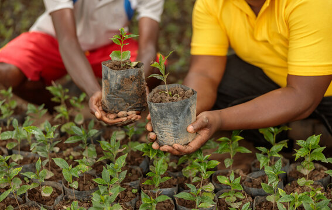
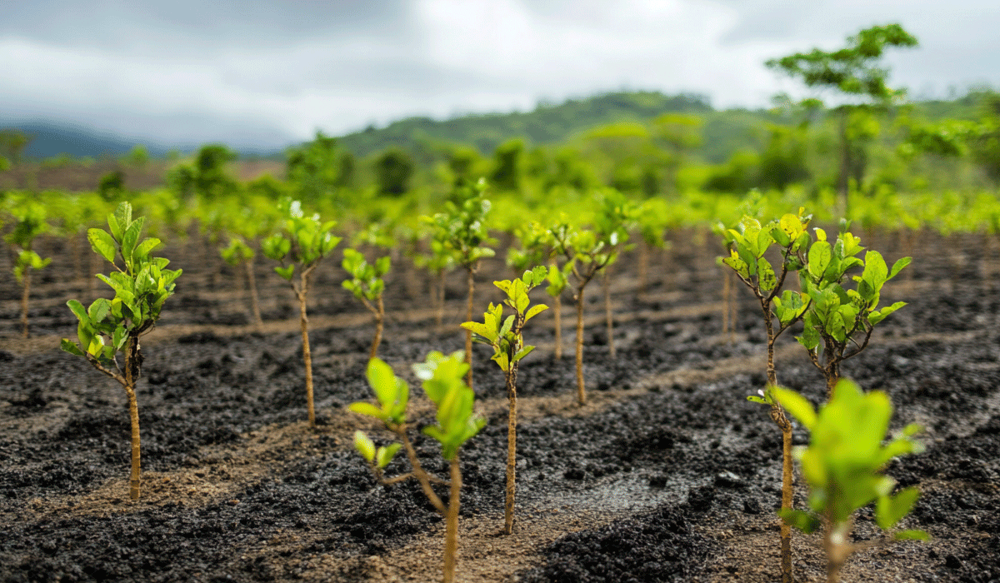
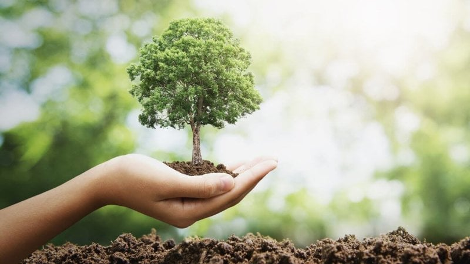
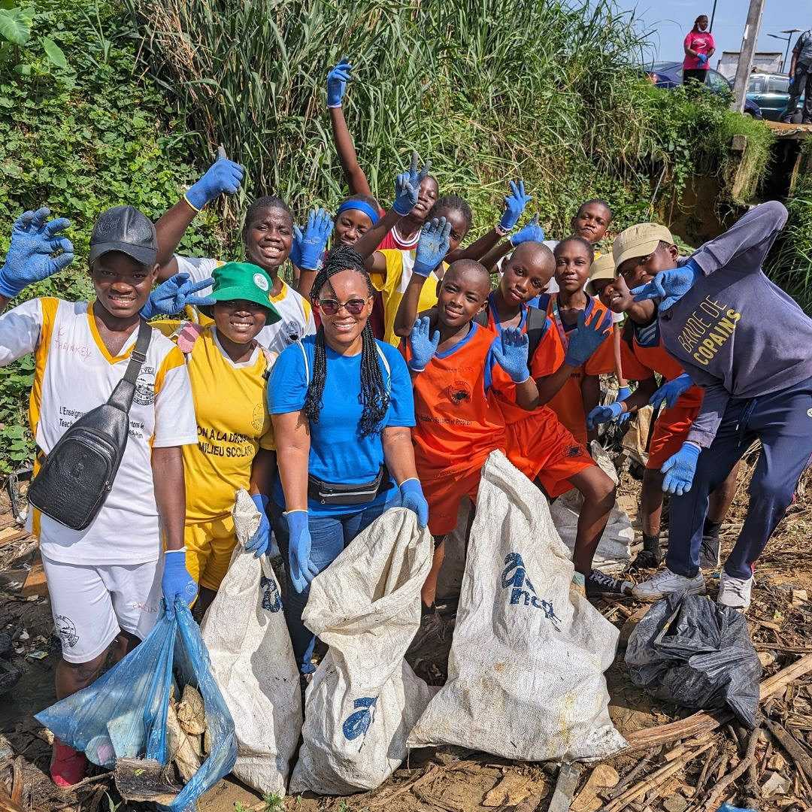
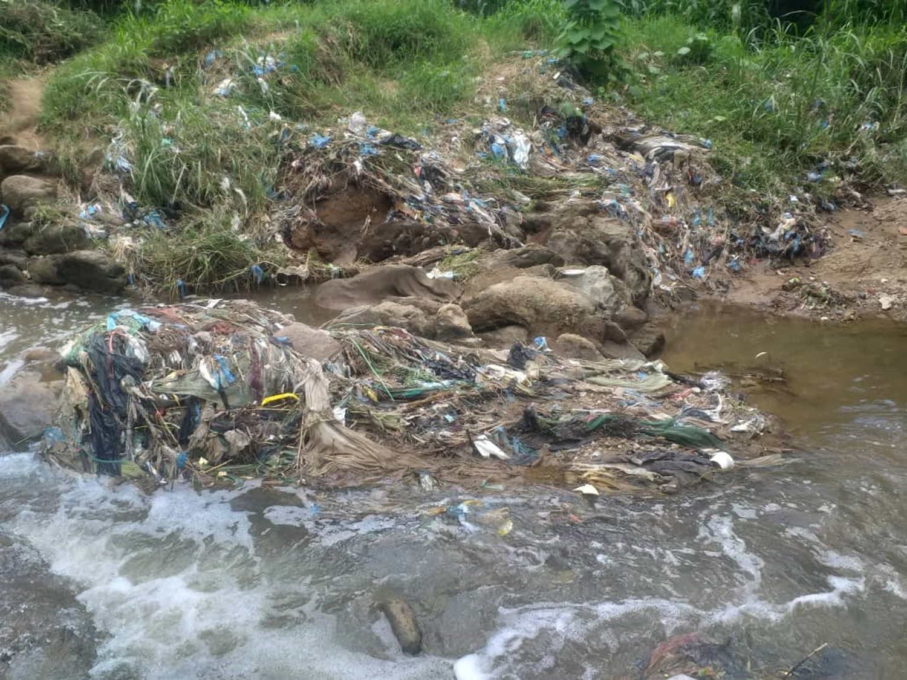
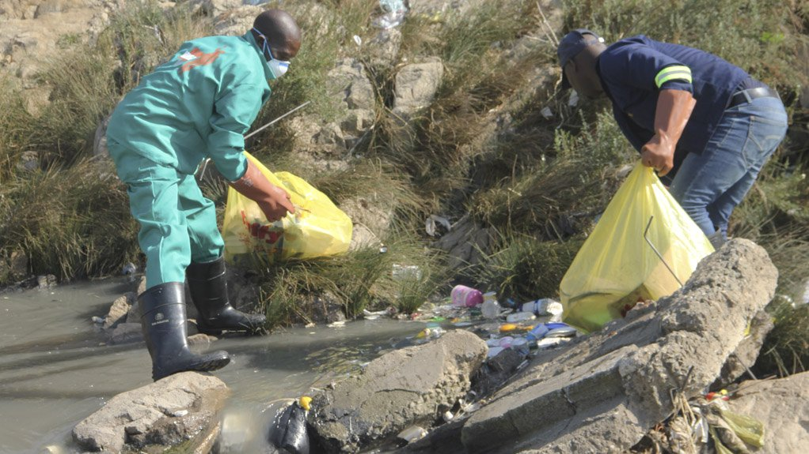
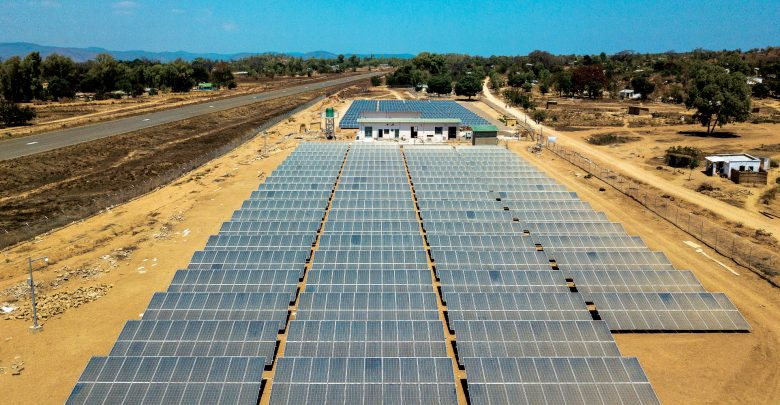
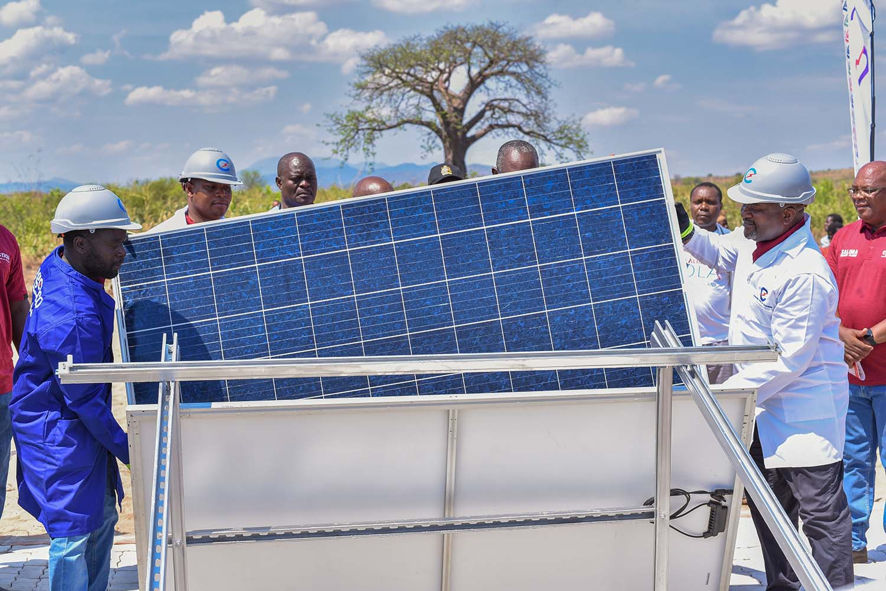
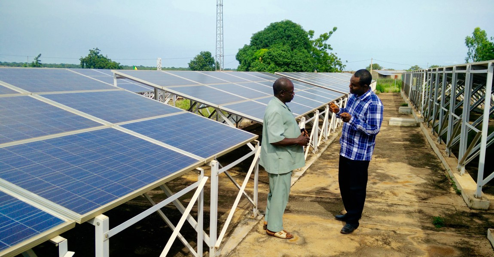

Reforestation Campaign in Ntcheu: We planted over 10,000 trees with the help of local youth groups and schools. More than 2,500 community members benefited from climate awareness, and reduced soil erosion has improved farming yields.



Lilongwe River Clean-Up: Partnered with local authorities to remove over 5 tons of waste from Lilongwe River. The initiative improved water quality for 12,000 nearby residents and restored aquatic biodiversity.



Solar Light Distribution in Machinga: Distributed 800+ solar lanterns to off-grid villages. Over 3,000 people now enjoy clean light at night, improving study hours for students and reducing fire risk from candles.